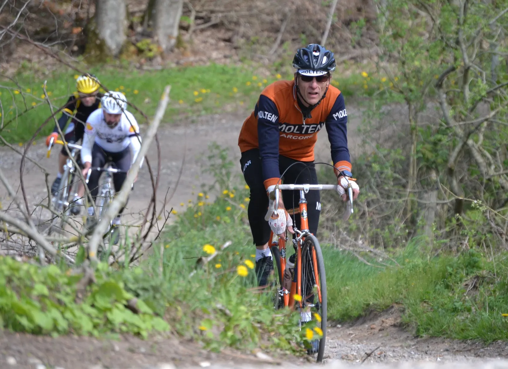

Optakt Grejsdalsløbet 2019: I sol og blæst – er Molteni bedst!

Vejrudsigten for Grejsdalsløbet på søndag siger sol, halvkøligt og blæsende. Derfor har Squadra Molteni udtaget Den belgiske trio: Kaptajn Niels Bjørnsteen, Løjtnant Kasper Sørensen og grimpeur Eigil Leegaard til at køre den bakkerige og prestigefyldte klassiker omkring Vejle.
På Squadra Molteni er fordelingen af arbejdsopgaverne i sådan et terræn og med dén vejrudsigt helt klar.
– Kasper og jeg skal på hårdt arbejde på søndag. Eigil er stærk på bakkerne omkring Vejle. Når vi ligger og træner på de bakker, så kører han jo nærmest 8-taller omkring os. Men samtidig er han er “frossenpind”, og han bliver let væk i sidevinden. Derfor bliver min og Kaspers opgave, at beskytte Eigil de første 100 km. Derefter er Eigil forhåbentlig blevet så varm, at han kan sætte et afgørende ryk ind på de sidste 3 bakker, siger Kaptajn Bjørnsteen, der netop hjemvendt fra højdetræningslejr på Falster med en hæmatokrit på 56.
Grimpeur Eigil Leegaard viste en nærmest lodret stigende formkurve ved Danmarks pendant på Strade Bianche: Grand Prix Vejle Ådal i søndags.


– Eigil var rigtig stærkt kørende, men på et tidspunkt, lige som jeg ser ned på min forbremse for at rette den – så er Eigil væk! Han var kørt forkert! Det var enormt ærgerligt, for han var endt på podiet, fortæller Kasper.
Derfor er jeg og Kaptajnen også ekstra dedikeret for at passe på ham på søndag.
Med lovning på op til 10 m/sek vind på søndag bliver det en hård omgang for de fleste ryttere ved Grejsdalsløbet. Men for Kaptajn Bjørnsteen og Løjtnant Sørensen er det et drømmescenarie.
– 10 m/sek vind er en lækkerbisken for Niels og Kasper. Der er ingen tvivl om, at i sol og blæst – er Molteni bedst. Niels og Kasper har en enorm motor – og efter jeg har finjusteret deres sadel, og dermed gjort mellemkødsvinkelen mindre, vil jeg skyde på, at de er mellem 25 – 35 watt ekstra at hente på side- og modvindsstykkerne, fortæller Squadra Moltenis tekniske ansvarlige Grane Maaløe.
Squadra Moltenis belgiske trio stiller op på Grejsdalsløbets 140 km-distance på søndag 12. maj.